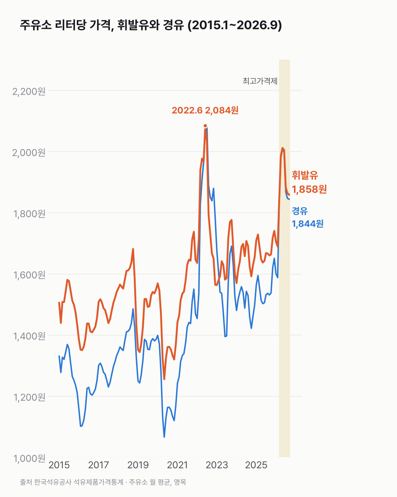
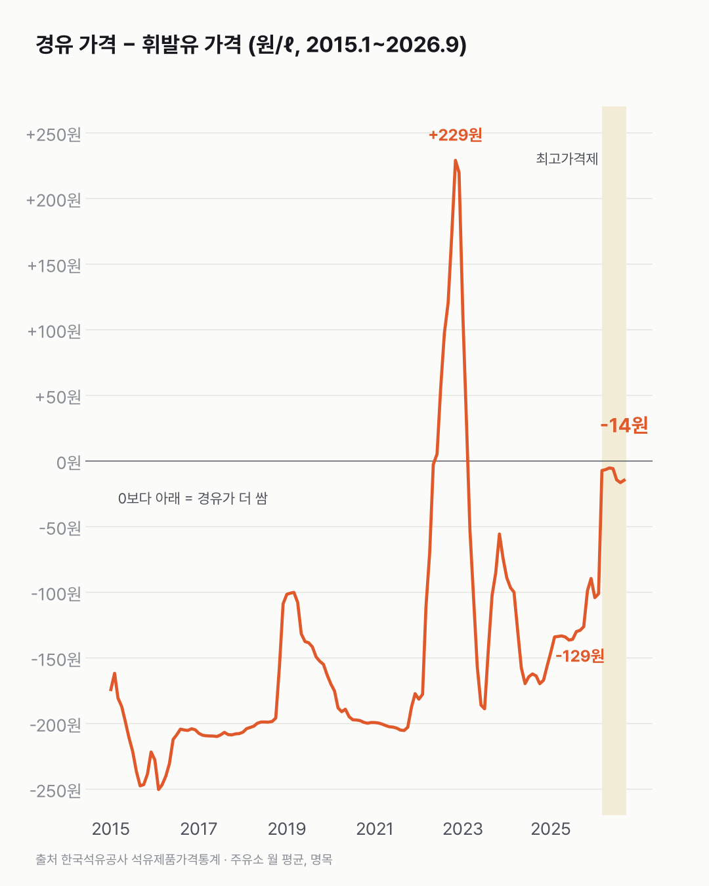

휘발유랑 경유, 요즘은 값 차이가 거의 없어요
기름값은 1년 전보다 올랐고, 휘발유와 경유 값 차이는 거의 없어졌어요.

- 2026년 9월 휘발유는 리터당 평균 1,858원, 경유는 1,844원이에요.
- 1년 전(2025년 9월)엔 휘발유 1,660원, 경유 1,531원으로 경유가 129원 쌌어요.
- 2026년 5월 휘발유 2,011원은 2022년 6월(2,084원) 다음으로 높은 값이었어요.
주유소 가격판엔 휘발유와 경유가 위아래로 붙어 있어요. 예전엔 두 줄의 숫자가 꽤 달랐어요. 2015~2021년엔 경유가 100~250원 쌌어요.
순서가 바뀐 때도 있었어요. 2022년 6월~2023년 2월엔 경유가 휘발유보다 비쌌고, 차이가 가장 컸던 2022년 11월엔 229원이었어요.
2026년 3월부터는 두 값이 5~16원 차이예요(반올림한 두 가격 기준). 9월까지 일곱 달째예요.
올해 5월 2,011원까지 올랐던 휘발유는 9월까지 내려왔어요. 2020년 5월 휘발유가 1,255원이었으니, 지금 값은 그때보다 48% 비싸요.

이 표엔 가격만 있어요. 두 기름값이 왜 이렇게 붙었는지는 다른 자료를 더 봐야 알 수 있었어요.
이 숫자는 어디서 왔나요
출처
기준일 2015년 1월 ~ 2026년 9월(월 평균)이에요.
한국석유공사석유제품가격통계
- 주유소 제품별 평균 판매가격KOSIS TX_31802_A000원본 보기
전국 월 평균 휘발유·경유·실내등유(원/ℓ), 2015.1~2026.9
어떻게 셌나요
- 전국 주유소의 제품별 판매가격을 달마다 평균 낸 값이에요. 부가세가 들어 있고, 물가를 반영하지 않은 그때 가격이에요.
- 석유 최고가격제(2026.3.13 시행)는 정유사가 주유소에 공급하는 가격의 상한이에요. 이 표의 주유소 판매가격과는 다른 가격이에요(보도). 차트에는 옅은 띠로 시행 시점만 표시했어요.
한계 3가지
이 데이터로 말할 수 없는 것
- 최고가격제의 효과는 이 데이터로 판단하지 않아요. 정부는 9월 소비자물가 상승률이 약 0.6%p 낮아졌다고 추산했어요(보도).
- 월 평균 전국 가격이에요. 지역·주유소별 차이는 다루지 않아요(이 사이트는 지역 비교를 하지 않아요).
- 유가 전망이나 투자 권유는 아니에요.
새 글 나오면 받아 보기
피드 리더 앱에 이 사이트 주소를 한 번 넣어 두면, 새 글이 올라올 때 앱에 떠요. 가입이나 메일 주소는 필요 없어요.
받는 법 보기
- 피드 리더 앱을 하나 골라요. 새 글을 모아 보여 주는 앱이에요. 예를 들면 Feedly나 Inoreader가 있어요. 둘 다 무료고 웹·휴대폰에서 써요.
- 앱에서 '구독 추가'(+)를 누르고 아래 주소를 붙여 넣어요.
- 끝이에요. 새 글이 올라오면 앱 목록에 떠요.
https://protofu.github.io/opendata-insight/feed.xmlFeedly를 쓴다면 여기를 눌러 바로 추가할 수도 있어요.